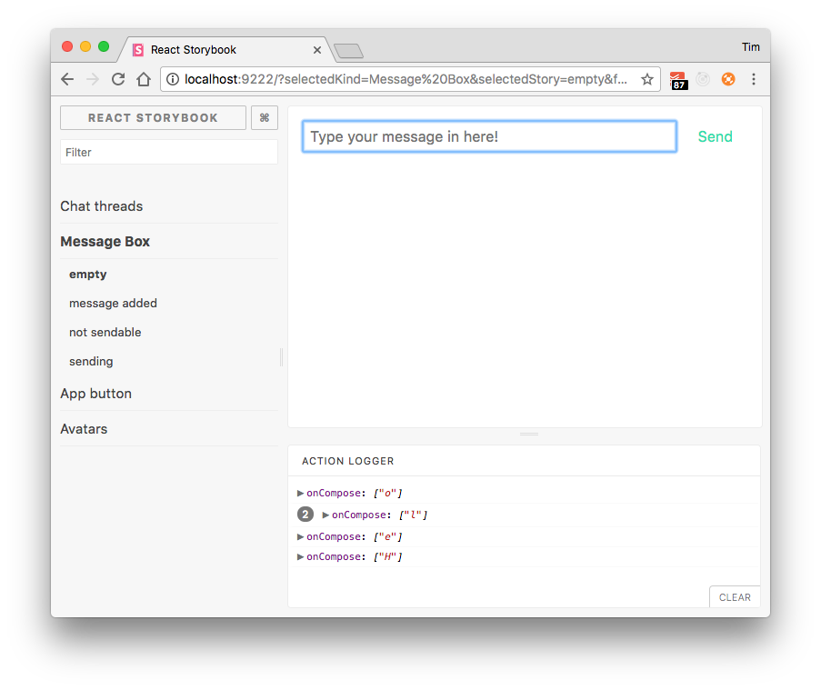

React + Redux
Agenda
- React + JSX
- Interaction
- Handling state with Redux
- React + Redux
- Redux + outside world
- Playtime
We're going to be building...
Happy chat!
Why's am I excited about React + Redux?
It takes longer to make apps
Boiler-plate
I've observed inferior performance
Virtual DOM
- Additional layer of abstraction vs jQuery or Vanilla
Redux
- Slower and wasteful of memory vs mutating objects
I've found simple things hard
I have to think loads about my data-structures
and the structure of the app
It makes sharing data a puzzle
But...
...longer to start, wins medium to long
...locally slower, globablly faster
...easy things harder, hard things possible
Hello React
JSX
Embedding HTML in JS
import React from 'react';
const avatar = <img src='./avatars/hippo.png' />;
...as a first-class value
e.g assign to variables
import React from 'react';
const avatar = <img src='./avatars/hippo.png' />;
e.g pass into functions
import React from 'react';
console.log(
<ul>
<li>Parrot</li>
<li>Elephant</li>
</ul>
);
e.g return from functions
import React from 'react';
const List = () => (
<ul>
<li>Parrot</li>
<li>Elephant</li>
</ul>
);
Configure editors now...
Exercise, then I'll show you around the app
Exercise 1
cd exercise-app
npm install
npm run storybook
# edit exercise-app/src/Avatar/story.js
The app
Uses create-react-app
- Quick start
- Zero-config
- Instant gratification!
- Storybooks
- Jest testing
JSX in more depth
Compiled
const List = <p>Parrot</p>
var List = React.createElement(
"p",
null,
"Parrot"
);
Let's play around in the console
ReactDOM.render(
React.createElement('div', {
style: {
color: 'red',
fontSize: '44px',
},
}, 'hello'),
document.body
)
The famous 'virtual DOM'
- Just JS data-structures
- Very similar to the actual DOM (without all the methods etc)
Reconciling the two
- What changes need to be made to the actual DOM...
- ...to bring it into line with VirtualDOM provided
Get a feel for what's going on with VirtualDOM
Console again
Creating components
import React from 'react';
const Parrot = () => (
<img src="images/avatars/parrot.svg" />
);
const twoParrots = <div>
<Parrot />
<Parrot />
</div>
One of the best things about JSX
...zero-cruft custom components
Templating
- Interpolate JS expressions via
{ ... } - Can be attributes or child expressions
Interpolating
import React from 'react';
const Avatar = (name) => (
<img src={'./avatars/' + name + '.png'} />
);
const Loud = (name) => (
<h2>{ name.toUppercase() }</h2>
);
All together
import React from 'react';
const Avatar = (name) => (
<img src={'./avatars/' + name + '.png'} />
);
const avatarList = () => (
<ul>
<Avatar avatar='parrot' />
<Avatar avatar='hippo' />
</ul>
);
// we would see <body><ul><img /></img /></ul></body>
ReactDOM.render(avatarList(), document.body)
No framework cruft in DOM!
Exercise 2
Again, in Avatar storybook
Programming React
Big idea of React
View as function of state
'Immediate mode'
State = props
Props
import React from 'react';
const Avatar = ({avatar}) => (
<img src={avatarToUrl(avatar)} />
);
const catAvatar = <Avatar avatar='cat' />;
function avatarToUrl(avatar) {
return '/img/avatars/' + avatar + '.svg';
}
Passing as objet
import React from 'react';
const Avatar = ({avatar}) => (
<img src={avatarToUrl(avatar)} />
);
const catProps = {avatar: 'cat'};
const catAvatar = <Avatar {...avatar} />;
// will have className prop too
const specialCat = <Avatar {...avatar}
className='special'
/>;
function avatarToUrl(avatar) {
return '/img/avatars/' + avatar + '.svg';
}
Children etc are also props
Tricks
const Double = ({ children }) => (
<div>
{ children }
{ children }
</div>
)
const Quadruple = ({ children }) => (
<Double>
<Double>
{ children }
</Double>
</Double>
)
ReactDOM.render(
<Quadruple children={<h2>☀️</h2>} />,
document.getElementById('container')
);
Data in props
const Items = ({ items }) => (
<ul>
{ items.map(child) }
</ul>
)
function child({ title }) {
return <li >{ title }</li>
}
// will cause an error
const three = [{title:"A"}, {title:"B"}, {title:"C"}];
const listOfThree = <Items items={three} />
// can fix with the 'key' attribute
Exercise 3!
Implement ChatThread
Interaction
V easy in React
Interpolate event handlers
import React from 'react';
const clicker = <button onClick={() => alert('hi')}>
Say hi
</button>
ReactDOM.render(clicker, document.body)
Pass in handlers in props
import React from 'react';
const Clicker = ({handleClick}) => (
<button onClick={handleClick}>
Say hi
</button>
)
ReactDOM.render(Clicker, document.body)
Sets up normal DOM event-listeners
- e.g will hear bubbling events as normal
Refs can be useful with events
const ImagePicker = ({onPicked}) => { let picked;
return
Storybook has a way to see events

Code
import React from 'react';
import { storiesOf, action } from '@kadira/storybook';
const WithListener = ({onActivate}) => (
<button onClick={onActivate}>
Click me
</button>
)
storiesOf('clicking', module)
.add('simple', () => (
<WithListener onActivate={action('onPress')} />
))
Exercise
Build the MessageBox
Redux
Redux is a scalable approach to state
However complex it gets
Three principles
One place for state: the store
Only actions cause state changes
Reducers return new states
- They do not modify a state
Redux cycle
- credit: Sigmus
State
- Any JS values you like!
- Usually data-structures, e.g
const state = {
chats: {
11: { // ...
},
users: {
// ..
}
}
Actions
- Only common field is
type
const action = {
type: "SEND_CHAT",
message: "hi there",
avatar: "penguin",
}
Action creators
export const SEND_CHAT = 'SEND_CHAT';
const sendChatAction = (message, avatar) => (
{ message, avatar, type: SEND_CHAT }
)
In today's app
- Group with static methods of classes in
action.jsfiles
export const SEND_CHAT = 'SEND_CHAT';
// ...
export class ChatActions {
static send() {}
static received() {}
static fetched() {}
}
Reducers
One API to learn
function reducer(state, action) {
// ...
return newState;
}
State
function reducer(state, data) {
// ...
return newState;
}
Action
function reducer(state, action) {
// ...
return newState;
}
New state
function reducer(state, action) {
// ...
return newState;
}
Complete
const up = () => ({ type: 'up' });
const down = () => ({ type: 'down' });
const actions = [up(), up(), down(), up()]
const state = actions.reduce(reducer, { count: 0 });
// { ... } ?
console.log(state);
function reducer(state, action) {
if(action.type === 'up') {
return { ...state, count: state.count + 1 };
} else {
return { ...state, count: state.count - 1 };
}
}
Wouldn't this be easier?
function reducer(state, action) {
if(action.type === 'up') {
state.count += 1;
} else {
state.count -= 1;
}
return state;
}
The problem
Lose benefits of immutable structures
e.g easy change detection
function hasStateChanged(stateA, stateB) {
return stateA === stateB;
}
Mutable version
function hasStateChanged(stateA, stateB) {
// expensive, quite a tricky algorithm in JS!
return deepEqual(stateA, stateB);
}
Can't rely on previous values
Which is very useful
function reducer(state, action) {
switch(action.type) {
// ...
case SOME_TYPE:
return {
...state,
previous: [...state.previous, newItem],
}
}
}
Stay immutable!
How?
Today: JS language features
- Safe Object/Array usage
- Avoid .splice/.pop/.push etc on arrays
- Avoid assignment or
Object.assign() - Use
...instead!
Exercise
exercise-app/src/FirstReduxPage
Building an Avatar picker
Wiring up React + Redux
Requirements
State from store to UI
Actions from UI to store
Loop
Not many component should know about Redux!
Connected + presentation
Presentation components, AKA...
- dumb components
Presentation components take data, draw
- Presentation components take in values and render them
- They emit values when users interact
Why values
- Canned values can be easily produced
Values v objects
- Values = no identity
- Values = compare by value
- Values = immutable
Stories
- If a dumb component only consumes values, can easily produce useful storybooks
- Work on your component in complete isolation from rest of app
Connected components, AKA...
- smart components
Connect to store
- links up the dumb components to your app
- these are very coupled to a specific context
Connected components
- usually quite 'thin'
- interesting stuff happens in reducers etc
- think: glue
With the functional style...
- we probably only need to write one function
mapStateToProps
- Given states, returns a component's props
Wiring
import React from 'react';
import ReactDOM from 'react-dom';
import { App } from "./index";
import { appStore } from './store';
import { Provider } from 'react-redux';
ReactDOM.render(
<Provider store={appStore}>
<App />
</Provider>,
document.getElementById('root')
);
Container component
import React from 'react';
import {connect} from 'react-redux';
const UserProfile = ({username}) => (
<span className='UserProfile'>{ username }</span>
)
// this returns props ready for a component
const mapStateToProps = ({ user: { username }}) => (
{ username }
);
// now using <UserProfileContainer /> we can render our thread, while
// keeping UserProfile ignorant of redux's existence
const UserProfileContainer = connect(mapStateToProps)(UserProfile);
// this wouldn't work alone - can you think why?
// const userProfile = <UserProfileContainer>
Map state to actions
const prepareActions = () => (
{
// pass in action creators, they will be wrapped in dispatch()
onChangePassword: UserProfileActions.changePassword,
}
)
const UserProfileContainer = connect(mapStateToProps)(UserProfile);
Exercise
- Use
create-react-appto create a 3d app directory - Define a component
- Include it into App
- Define a reducer
- Define a selector
- Define an action
- then...
...wire it up
- Using react-redux, wire the state into your component's props, and ensure the component dispatches an action on some UI integration
- Well done: you've cracked it!
Modeling state
Operations that occur over time
e.g AJAX fetch
Some people solve as follows
const startState = {
chats: undefined,
chatsLoaded: false,
chatLoadError: undefined,
}
const successState = {
chats: [ { id: 'abbc', text: 'hi', //....
chatsLoaded: true,
chatLoadError: undefined,
}
const failureState = {
chats: undefined,
chatsLoaded: true,
chatLoadError: Error("hi'),
}
I prefer an Elm inspired approach
RemoteValue
Let's take a look at the source code
Exercise
Update chat story to support loading, and error views
Exercise - ChatThread part 2
Multiple references to data
Using same data in multiple places
Two approaches
Normalized
AKA relational
Have 'tables' for each type, with keys
Where you cross reference, use IDs
Second option: de-normalize
Inline the data
For Redux: normalize
Updating immutably is already fiddly
Manually keeping all versions up to date
e.g
const state = {
selectedChat: {
id: 10,
message: 'hi there',
},
chats: {
10: { message: 'hi there', },
26: { // ...
27: { // ...
},
};
We now have versions of the same data!
SPOT
- Single
- Point
- Of
- Truth
Use selectors to hide structure of data
Pass state freely, but only access via Selectors
e.g waaaaay coupled
const ChatView = ({ state }) => {
<ul>
{
(state.chat.chats && state.chats.chats.state === 'here'
? state.chat.chats.value
: [])
.map(chat => (
{
...chat,
isMine: state.user && state.user.id === chat.id,
}
))
.map(chatItem)
}
</ul>
};
e.g keep decoupled
const ChatView = ({ state }) => {
<ul>
{
ChatSelectors.loadedChats(state)
.map(chatItem)
}
</ul>
};
Use selectors to turn 'ids' into data
export class ChatSelectors {
static selectedChat(state) {
return state.chat.selectedId
? getRow(state.chat.chats, state.chat.selectedId)
: undefined;
}
}
Reducer exercise
Implement the chat reducer
We'll use:
- our knowledge of immutable structures
- of normalization
- and of the concept of the RemoteValue abstraction
Scary world outside Redux
Redux
- Deterministic
- Synchronous
- Easy!
Sadly...
We do need to interact with the real world
Side-effects
- Non-deterministic
- A-synchronous
- Tricky
How do we bridge the gap?
Many projects
- redux-thunk
- redux-sagas
- etc...
Today I'll advocate
KISS
Middleware
Actions in, actions out
Listen for certain actions, and do...
...whatever
- talk to APIs
- IndexedDB
- LocalStorage
- Cookies
- etc
Then dispatch actions
We're talking to two types of API today
Request-response
Real-time
Walk-through
- Implementing fetching, and creating chats
Designing React + Redux apps
Examples from the room!
Thanks!
ES20xx
Important highlights
const
- In functional code, we use
const - We don't reassign in application code - only library/helper code when required
const
const item = {};
// not allowed
item = {};
Array spread - ES2015
const listA = [1,2,3];
const listB = [...listA, 4, 5];
const listC = [-2, -1, 0, ...listA];
const listD = [...listA, ...listA];
// [1, 2, 3], [1, 2, 3, 4, 5], [-2, -1, 0, 1, 2, 3], [1, 2, 3, 1, 2, 3]
console.log(listA, listB, listC, listD);
Argument spreading
function joins(...args) {
return args.join('-');
}
// 1-2-3-4
console.log(joins(1,2,3,4))
// 1-2-3-4-5-6-7
console.log(joins(...[1,2,3,4], 5, ...[6], 7))
Object spread
- ES2017 proposal, supported by babel
Object spread
const chatA = { message: "hi", avatar: "hippo" };
const chatB = { ...chatA, avatar: "snake" };
const chatC = { ...chatB, avatar: "monkey" };
const doesn't relate to immutability
- You can still mutate mutable objects referred to by a
const - But: if you can, don't mutate anything in a Redux codebase!
const + mutability
const chatA = { message: "hi", avatar: "hippo" };
// this works, but, as we'll see, will make your code hard to work with
chatA.message = 'another';
Functions
- Default arguments, implicit returns
Function syntax
const makeChat = (message, avatar = "hippo") => (
{ message, avatar }
);
function makeChange(message, avatar) {
avatar = avatar == null ? 'hippo' : avatar;
return { message: message, avatar: avatar }
}
Static functions
- Handy for grouping related functions in an IDE friendly way
Static methods
export class UserSelectors {
static get(state, id) {
// ...
}
static all(state) {
// ...
}
}
// elsewhere
import { UserSelectors } from "./UserSelectors";
const everyone = UserSelectors.all(state)
Everyone happy?
- Can try it together at: babeljs.io/repl
Import/export
- Today, stick to named imports
- With some default imports
e.g
import React from 'react';
export function SomeComponent() {
}
import { OtherComponent } from "./OtherComponent";